Pentax 110 Auto
This is my first (and probably only) 110 format camera, and its so cute! The Pentax 110 is the worlds smallest film camera with an interchangable lens; mine came with three prime lenses: an 18mm, a 24mm, and a 50mm. These lenses all have the same aperture which is fixed, as the blades are in the body of the camera itself! The camera is completely in control of the exposure of the film, hence the "auto" in the name. This makes it great for snapping quick pictures, but sucks if you want to mess with the exposure (pushing, pulling, etc.)
The 110 format was first introduced in 1972 by Kodak, and lasted up until late 2009. It is about the same size as 16mm film, so has about a quater of the quality of 35mm film. In 2012 Lomography started producing new reels of 110, and continue to make it to this day. Unfortunately Lomography are the only company to make it, so you are beholden to their pricing and availability, although it's not too bad right now. The Pictures below are shot in LomoChrome Purple, Metropolis, and Colour '92 film.
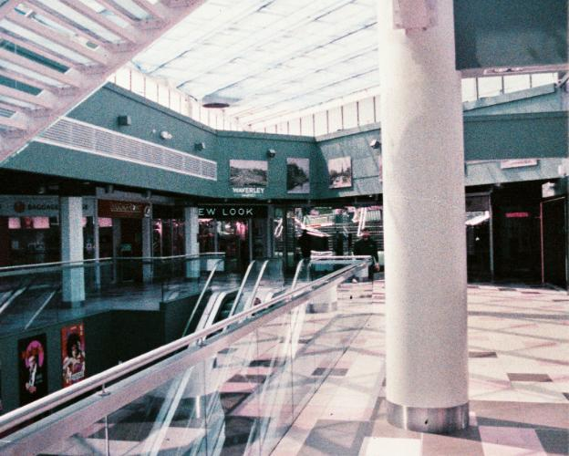
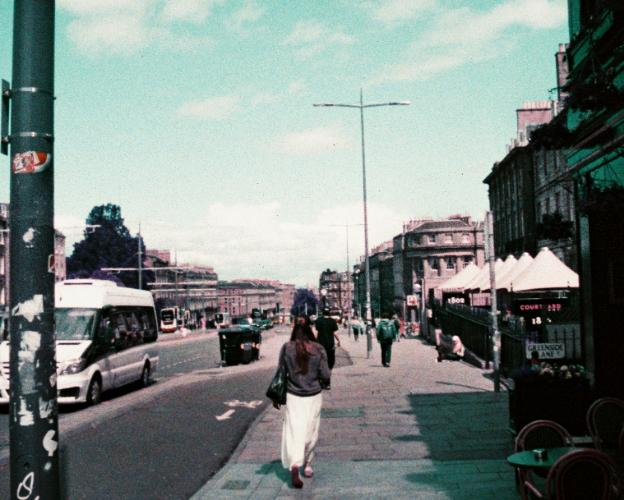
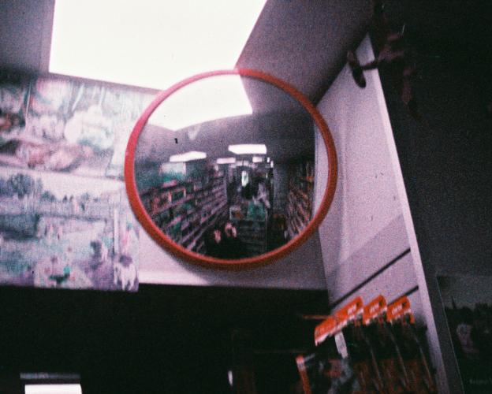
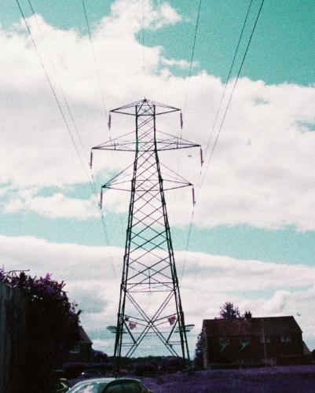
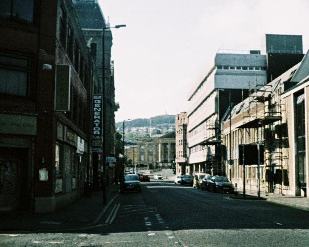
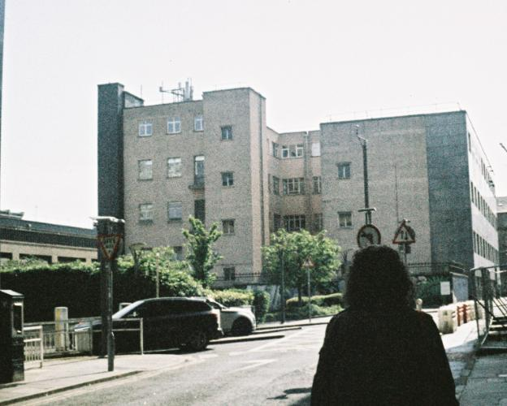
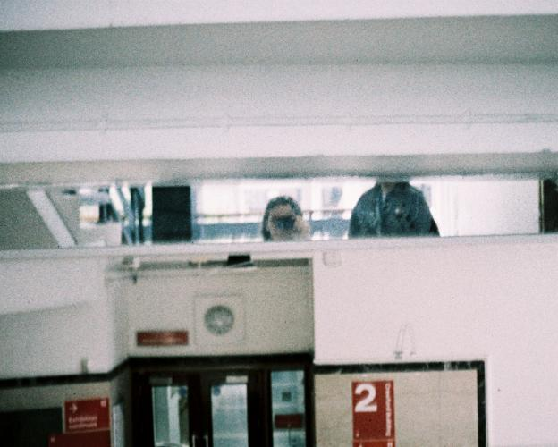
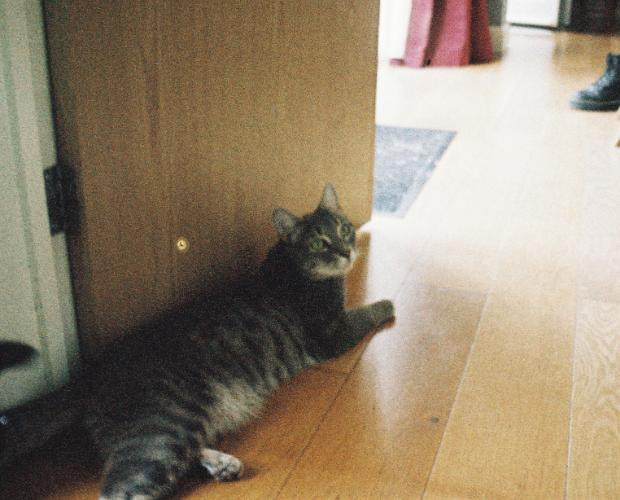
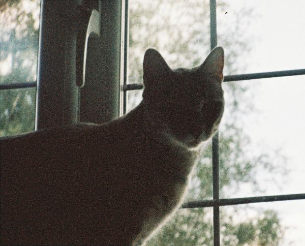
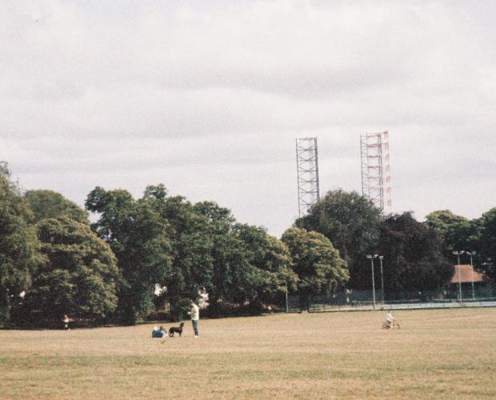
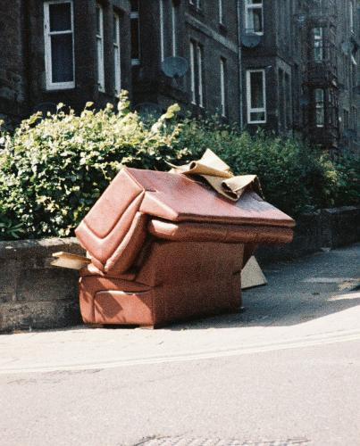
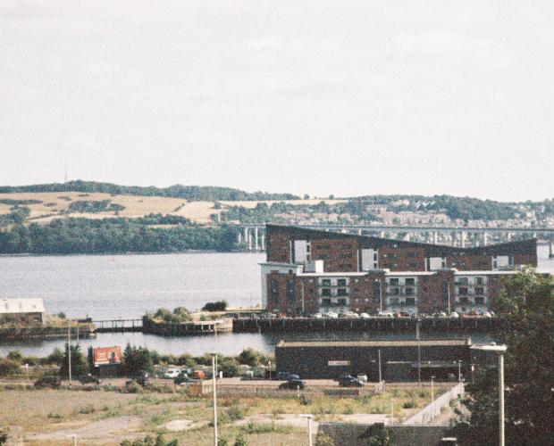
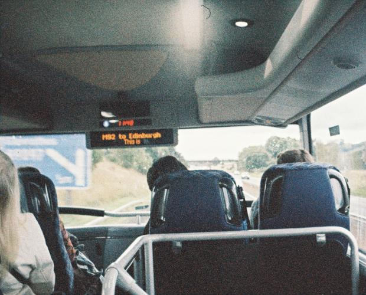
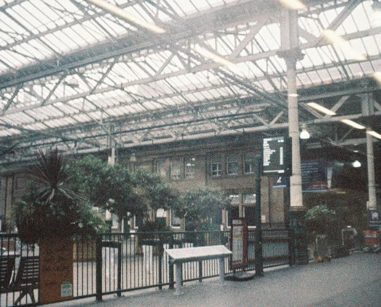
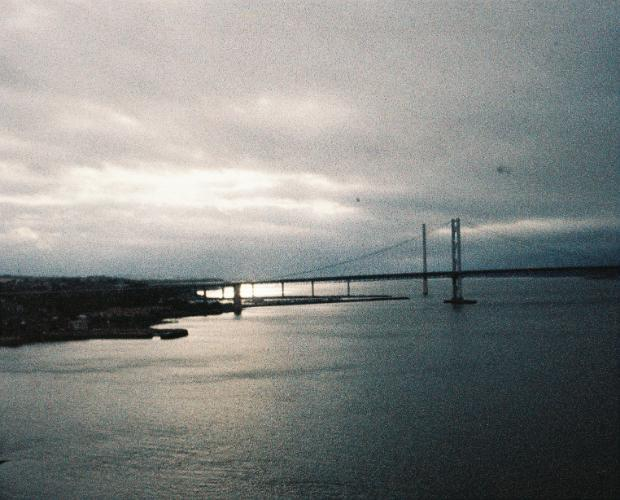
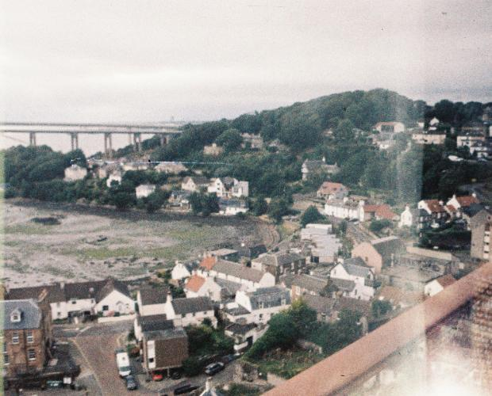